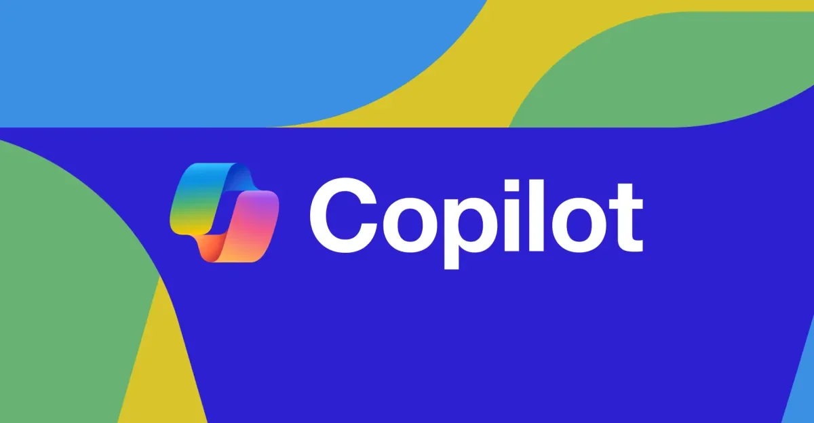

AI 巨头混战：超级应用、个人代理与硬件野心
微软确认 Copilot 超级应用年内上线，Meta 押注个人 AI 代理，OpenAI 自研硬件，xAI 起诉明州反脱衣法，微软投资 Anthropic 获利 32 亿美元。科技巨头在 AI 赛道的战略分化与碰撞。
把每天真正值得理解的事情，写成可以慢慢读的文章，也做成可以随时听的播客。

微软确认 Copilot 超级应用年内上线，Meta 押注个人 AI 代理，OpenAI 自研硬件，xAI 起诉明州反脱衣法，微软投资 Anthropic 获利 32 亿美元。科技巨头在 AI 赛道的战略分化与碰撞。
从高校党建督导、校殇日纪念到Fauci听证会、教师新模式，本期拆解事件背后的教育公平与成长启示。
今天聊五件事：CBA选秀状元为何从香饽饽变成烫手山芋？全民健身新计划有哪些实在的部署？皇马有信心签下罗德里？英联邦拳击赛上，阿明孙子因头槌被取消资格。最后聊聊这些事对普通人的启示。